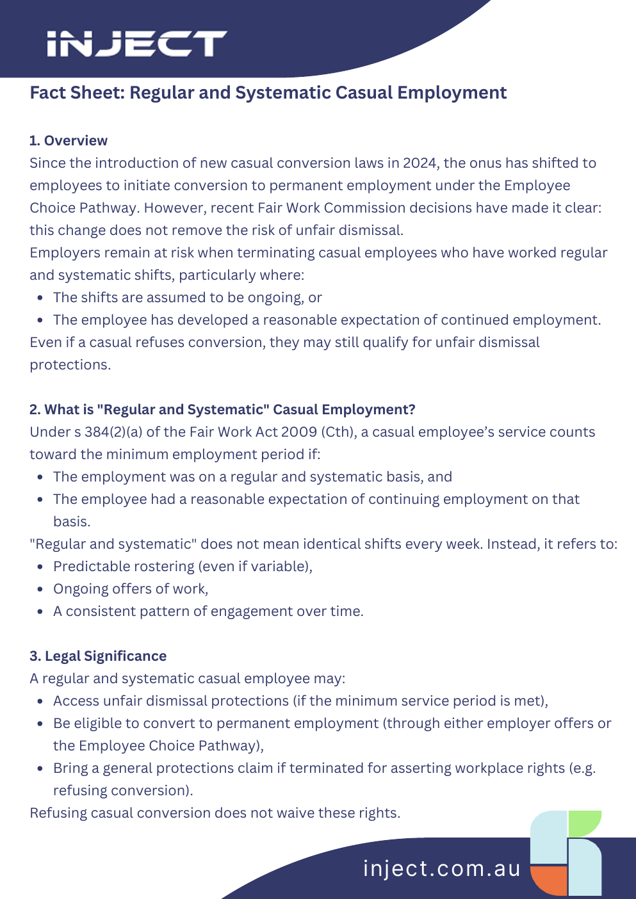
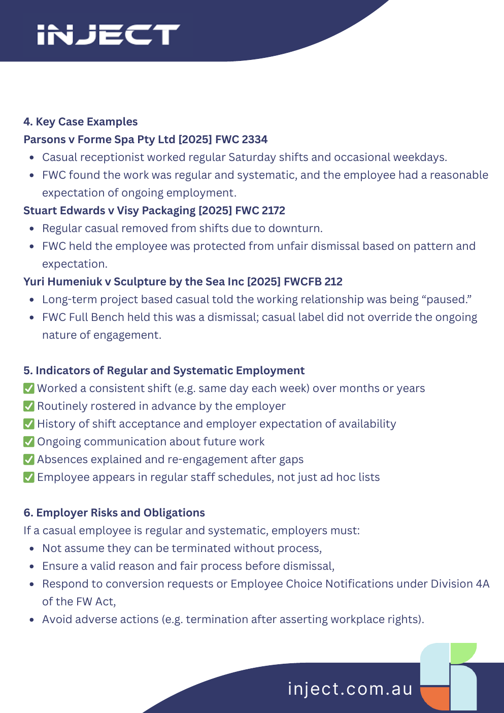
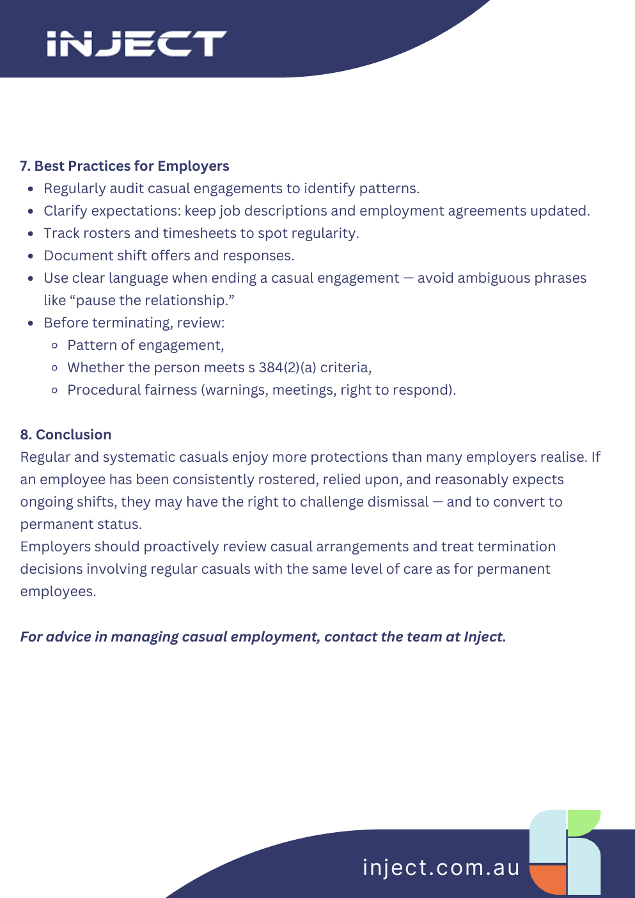

What is the manager trying to do?
Performance warning, ending shifts, reducing hours, rejecting conversion, or responding to a role no longer existing.
Australian HR guidance
Help managers understand when a casual’s real work pattern creates process risk, especially where they have worked regular hours over time.
First response
Most casual employment mistakes happen when the manager sees “casual” and skips the reason, pattern, and process check.
Performance warning, ending shifts, reducing hours, rejecting conversion, or responding to a role no longer existing.
Check rosters, timesheets, future bookings, accepted shifts, manager messages, and whether ongoing work was expected.
If regular and systematic, use warnings for performance issues and redundancy-style consultation if the work is ending.
Regular and systematic
A casual may still be a casual for pay and leave purposes, while also having dismissal-risk protections because of their pattern of work and expectation of continuing employment.
Not automatic permanency
But regular hours should trigger a risk review. The key question is not just what the contract says, but whether the employee reasonably expected work would continue.
Work is genuinely irregular, accepted or refused shift-by-shift, and there is no real expectation that shifts will continue.
Work has an organised pattern and the employee reasonably expects ongoing work, even if days or hours vary.
Treat exits like process-risk decisions: evidence first, fair opportunity to respond, consultation where relevant, then documented outcome.
Advisor guide
Use these prompts to guide managers without turning the conversation into legal jargon.
Only if the work is genuinely ad hoc and there is no reasonable expectation of continuing work. If the person has been regularly rostered, review unfair dismissal and general protections risk before changing shifts or ending the engagement.
Even though they are casual and receive loading, regular and systematic work may create dismissal protections similar to a permanent employee. To reduce risk, use a performance improvement process: identify the concern, meet with them, let them respond, set expectations, issue a warning if performance does not improve, and only consider termination after clear communication and a fair chance to improve.
Do not frame this as simply stopping shifts. If they are regular and systematic, run a redundancy-style process: document the operational reason, consult before a final decision, consider other suitable work, and confirm the outcome in writing. Casuals generally do not receive redundancy pay, but the process still matters.
No. Refusing conversion or not asking to convert does not automatically remove unfair dismissal risk. The work pattern and expectation of continuing employment still matter.
Ask for the contract, casual loading evidence, rosters and timesheets, manager messages about future work, accepted or refused shifts, performance records, and the business reason if hours or work are being reduced.
Employee choice pathway
An eligible casual can give written notice to change to permanent employment if they believe they no longer meet the casual definition.
Generally 6 months of employment, or 12 months for a small business. Check current transition rules for casuals employed before 26 August 2024.
Consult first and respond in writing within 21 days. If accepting, confirm full-time or part-time status, hours, and start date.
Refusal should only be used where a permitted reason can be supported, such as the employee still being genuinely casual, strong operational grounds, or a legal recruitment or selection requirement.
Ending work safely
Use coaching, warnings, opportunity to respond, support, review dates, and documented consequences.
Use redundancy-style consultation and alternative-work checks. No redundancy pay is generally required for casuals.
If there is no pattern and no ongoing expectation, a shift may not be offered. Still record the business reason.
Quick risk check
The result is a process recommendation for HR advisors, not a legal conclusion.
Reference material
The PDF has also been rendered as images so the site does not rely on a browser or host correctly displaying a PDF.



Sources